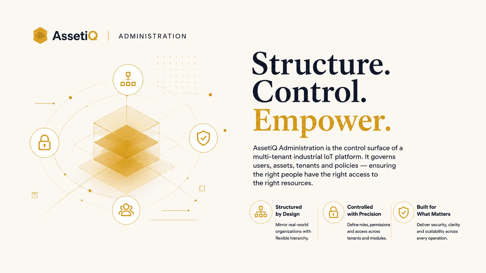
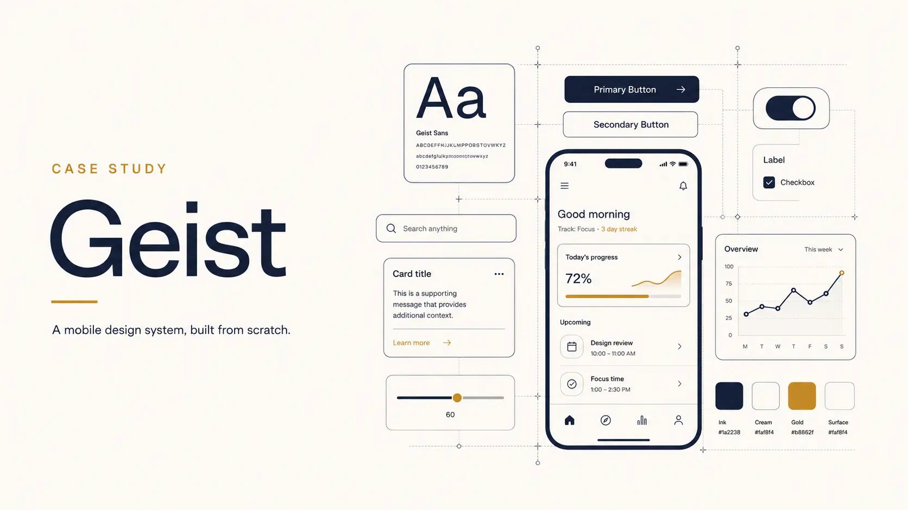
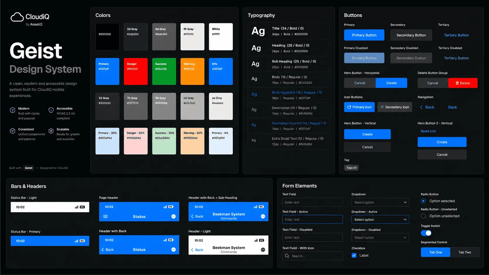
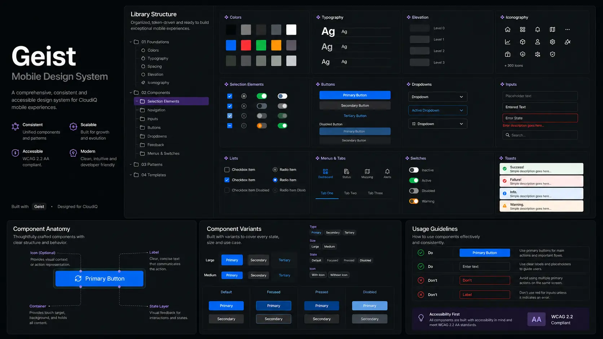
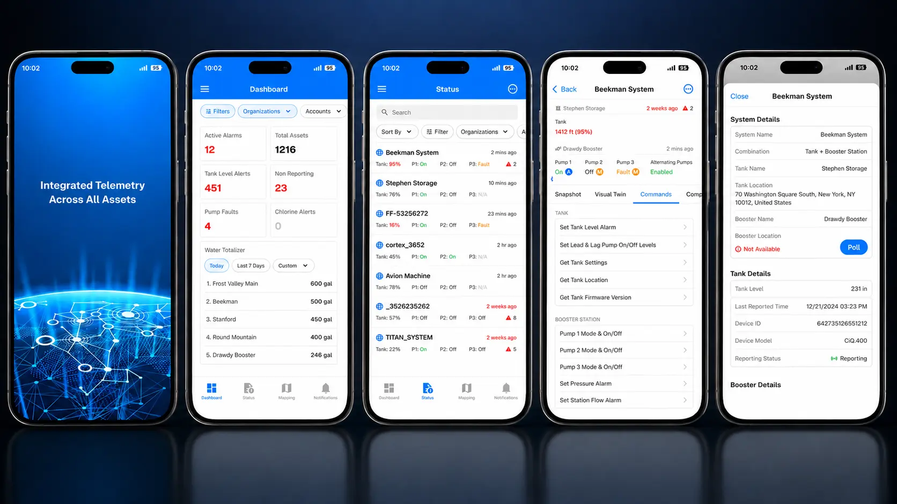

Hash8 · AssetiQ
Cross-Organization Asset Sharing
Trust, scoped and revocable — collaboration without compromising control.
Scoped permissionsView-only accessVendor collaborationEvent-driven alerts
Hi, I'm Kathir.
Teams call me
Eight years designing for industrial IoT — where the user wears gloves, stands in the sun, and cannot afford to get it wrong. I own the full arc, from functional analysis to the shipped screen.
The real problem is rarely the screen — it's the system missing behind it.
People don't buy what you do; they buy why you do it.— Simon Sinek
An electrical engineer who became a product designer — and never stopped reading the schematic.
I spent eight years turning complex industrial IoT platforms into interfaces that field workers, operators, and enterprise teams can use without a manual. My background in Electrical & Electronics Engineering means I don't need the domain explained — I design from inside it.
Most recently I was the sole product designer on AssetiQ, a multi-tenant IoT SaaS platform spanning five industrial verticals, with enterprise customers across chemicals, manufacturing, energy and water utilities. I owned every design decision end to end: research, interaction, interface, and the handoff that engineering builds from.
I'm not a stage in the product process. I'm the spine that runs through it.
An EEE foundation plus eight years of design — genuine fluency in the technical systems behind the interface, not a designer working at arm's length from the domain.
Functional analysis, requirement analysis, design thinking, UX, UI handoff, product strategy, vision alignment, team leadership — held by one person, in sequence.
Sole designer on a live enterprise platform — production launches delivered against named industrial clients, with no design org to fall back on.
Designing the control layer of a multi-tenant industrial IoT platform — where one interface governs users, assets, and access across five verticals and multiple enterprise tenants.

Building a shared mobile component library from scratch as a one-person design function — and shipping it through to a live production vertical.

How I unified five fragmented admin systems into one platform layer — built to scale with the company.
The administration layer is where a multi-tenant platform either stays manageable or quietly becomes unmanageable. This is how I designed the control surface that holds AssetiQ together.
AssetiQ is a multi-tenant IoT SaaS platform spanning five industrial verticals — LiftiQ, ReeferiQ, CloudiQ, TankiQ and FlowiQ — used by enterprise organizations to manage industrial assets, devices and field operations at scale.
When I took on the platform, administration didn't exist as one thing. Each vertical application carried its own separate admin system — its own design patterns, its own gaps, its own logic. An owner or admin responsible for more than one asset type had to move between several disconnected admin tools just to manage their own people and assets: different interfaces, missing features, no shared muscle memory. The result was constant friction — confused user management, inconsistent control, and onboarding that leaned heavily on Hash8's support team.
The real problem wasn't any single screen — it was the absence of a system.
So I reframed the work: instead of improving five admin tools, design one. A single administration layer governing every application, every tenant and every asset type under one roof — and, critically, one built to absorb new applications as the platform grew, not just the five that existed then.
Multi-tenant administration sits on a hard tension: powerful enough for genuinely complex enterprise configuration, simple enough that an operator is never lost in it. Three problems made that especially hard here.
Fragmentation
Five separate admin systems meant five design languages, five mental models and no transferable knowledge. Managing a workforce and its assets across applications was genuinely painful — and customers had largely stopped expecting it to be otherwise.
Access at scale
In industrial IoT, visibility is not cosmetic — it is security. Who can see and act on which assets, accounts and entities had to be controlled precisely, across organizations ranging from a single flat team to large, arbitrarily deep hierarchies distributed worldwide. Designing access control that held up across that entire range was the hardest part of the work.
The unspoken pain
Customers couldn't always articulate what was wrong — they had adapted to the friction. The job wasn't to ask users what they wanted and build it; it was to identify the pain they couldn't name, design it out, and prevent the next one. Designing for the common denominator across every vertical, rather than any single request, was the only way there.
Designing for the pain users can't name — not just the features they ask for.
As the sole designer on AssetiQ, I owned the work end to end — functional and requirement analysis, interaction and interface design, prototyping, and the handoff engineering built from. I treat design as a system problem before a screen problem: define the structure, then draw.
Define the structure first. The screens follow.
My process starts with why. Before How or What, I dig into why a customer actually needs a capability — because designing on top of an unexamined "why" is how products accumulate expensive rework later. From there: customer research, Jobs-to-be-Done, user personas, and a deliberate habit of working the problem from the user's own standpoint.
I partnered closely with the CEO on product direction, distilled requirements down to their essentials, and reverse-engineered the key decisions from there. Concepts moved into low-fidelity wireframes — Whimsical, or quick sketches in Figma — then into review with a product manager, a UI developer and the CEO, where every detail was scrutinized before anything went high-fidelity.
High-fidelity design and prototyping followed, with design variants tested and critiqued inside the team and a red-team / blue-team critique pass to pressure-test the final direction. One rule held throughout: simplicity is the hard outcome, not the easy one — making something genuinely simple is harder than leaving it complex.
After handoff to UI and engineering, the work didn't stop. Post-release I ran usability testing, gathered real customer feedback, and validated usage and performance with product analytics — closing the loop and feeding the next iteration.
The outcome was a single administration layer with one consistent model — so that configuring organizations, users, assets and access followed the same logic regardless of vertical or tenant.
One core, many applications
Five vertical applications sit on top of a single administration core. Everything they share lives in that core — organizations, accounts, asset groups, users and roles, plus the cross-cutting entities each application depends on. New applications can be added without redesigning administration; the structure was built to expand.
A role system that works out of the box
Rather than forcing every customer to configure their own roles, I designed a comprehensive set of default roles across four organization types — with a clean Owner / Admin / Member / Viewer pattern that repeats predictably at both organization and account level. Administration access is reserved for Owners and Admins; Members work within the applications themselves. This was a deliberate bet on convention over configuration: a default structure complete enough that most customers never need to customize it.
A default structure complete enough that most customers never need to configure it.
A hierarchy that flexes from flat to deep
Four primitives let customers model almost any organizational shape:
Geofences add an attribute-based layer on top — virtual map perimeters scoped to an organization or account, driving access rules for moving assets and field-service activity.
Together these primitives turn what is theoretically very complex — multi-tenant, hierarchical, RBAC and ABAC access — into something a customer can learn quickly and shape to their own needs. And because the administration layer was built as a modular, decomposable system rather than something hardcoded to AssetiQ, it can serve use cases well beyond it.
Over my time on the platform, AssetiQ grew from roughly $60K to $200K+ in ARR and expanded from a product into a platform — with the administration layer as the backbone holding multi-tenant operations together. Design was not the only driver of that growth, but it was a core one: the administration experience became a genuine differentiator in how the platform was sold and adopted.
The clearest signals were operational:
Figures are informed estimates, based on customer feedback and platform usage rather than formal instrumentation.
The administration experience became a reason the platform was chosen — not just a feature within it.
Qualitatively, enterprise customers singled out the administration system specifically — noting they had not seen one that combined this level of sophistication with this much simplicity.
How I built a mobile component library from scratch — solo, under deadline, and shipped it to production.
Building shared design infrastructure as a one-person design function — and the honest story of taking it from zero to a real, shipped library on a live vertical.

The Geist component set — colour, type, buttons, headers and form elements as one mobile vocabulary.
CloudiQ was set to be the first AssetiQ application to launch on mobile — the App Store and Google Play. Mobile is a different design problem from web: touch instead of keyboard and mouse, smaller canvas, different ergonomics. Without a shared foundation, every new mobile screen would mean re-deciding the basics, and consistency would drift screen by screen.
Geist began as the answer to that drift — a common component library for mobile, built across iOS and Android, with CloudiQ as its first home.
The brief was to make CloudiQ feel genuinely top-tier on mobile — and to ship it fast. A design system was not part of the plan; CloudiQ was being rushed to launch, and building foundational infrastructure was seen as a detour.
I disagreed, on judgement. Launching a mobile product with no system would generate design debt the team could never realistically unwind later — every screen built on sand. So I made a call: build the system anyway, in parallel, inside the deadline. I had competing work at the same time — AssetiQ web design, alignment meetings — so I built much of Geist in my own hours, at home, because I was convinced it would become the stable foundation the team would come to rely on. The challenge wasn't a lack of skill; it was delivering foundational infrastructure under a deadline that hadn't budgeted for it.
A design system wasn't in the plan. I built it anyway — because skipping it was a debt the team could never repay.
I built Geist on atomic design — atoms and base components first, then molecules, organisms, templates, and finally pages. The foundations came first: a text hierarchy meeting WCAG AA accessibility standards, then a full colour system covering every state — normal, info, warning, critical, disabled, highlight — then buttons, primary through secondary, and outward from there.
For the typeface, I tested several fonts for mobile legibility. Vercel's open-source Geist font came out the clear winner for small-screen interfaces — and the system took its name from it.
The key decision was scope. Under the deadline, I deliberately built Geist to component-and-variation level rather than a full token architecture. That was a time-constrained build strategy, not a compromise: get a reliable, well-structured component library into real product first, prove its value in production, and mature it into a fully tokenized system once it had earned its place.
Shipping a real foundation beats holding out for a perfect one.

Inside the Geist library — foundations, components and patterns organized for reuse, with anatomy and usage rules built in.
Geist gave CloudiQ a consistent, reusable set of mobile components — a shared vocabulary that made the interface coherent and sped up the design of every new screen.
A deliberate principle shaped it: mobile is not web on a smaller screen. AssetiQ's web product was data-dense by design. The mobile app had to be the opposite — not a flood of information, but fine-tuned insights and the action items that actually matter on the move, with timely push notifications for anything critical or time-sensitive. That distinction was built into the components from the ground up.
Mobile isn't web on a smaller screen — it's fine-tuned insight and action, not a flood of data.
I used Geist to design the full CloudiQ mobile screens, then built an interactive prototype the team could open and use. The reaction was the milestone: people opening the prototype assumed they were using a real, working app — it took a few minutes of looking for tap targets to realise it wasn't. CloudiQ had reached production quality, on mobile, inside a compressed timeline.

Geist in production — CloudiQ's live mobile screens, built entirely from the system.
Geist shipped into production on CloudiQ — the platform's most mature vertical — built from scratch with no prior design system, no design team, and a deadline that hadn't allowed for it. It cut repetitive rework on mobile screens by 80% and made design updates four times faster to roll out, while strengthening how customers engaged with the product on mobile.
I'm clear-eyed about what Geist is: a robust component-and-variation library, not yet a fully tokenized design system. That was the right scope for the moment — and the deliberate next stage is a complete token architecture, extended beyond CloudiQ to the other verticals.
Foundational work rarely arrives with permission or time attached — the judgement is knowing which foundations to build anyway.
Beyond the two deep-dives above — selected projects from eight years across platform design, design systems, and product strategy.
Trust, scoped and revocable — collaboration without compromising control.
Where location becomes logic — boundaries drawn, dropped, or defined.
Signal over noise — decisions surfaced the moment you land.
Mirror the field. Master the outcome — before reality forces the decision.
More signal. Less noise. Right audience — every alert, earned.
The quiet surfaces that make a platform feel alive.
The factory, made legible — from blueprint to bottleneck.
Mission-critical fleets, made manageable — for the operators behind the wheel.
Building product thinkers — not just product doers.
The strategic lenses I think through before a single pixel — how I frame the problem, the product, and the market around it.
Open to Senior Product Designer roles — Bangalore or remote. The fastest way to reach me is below.